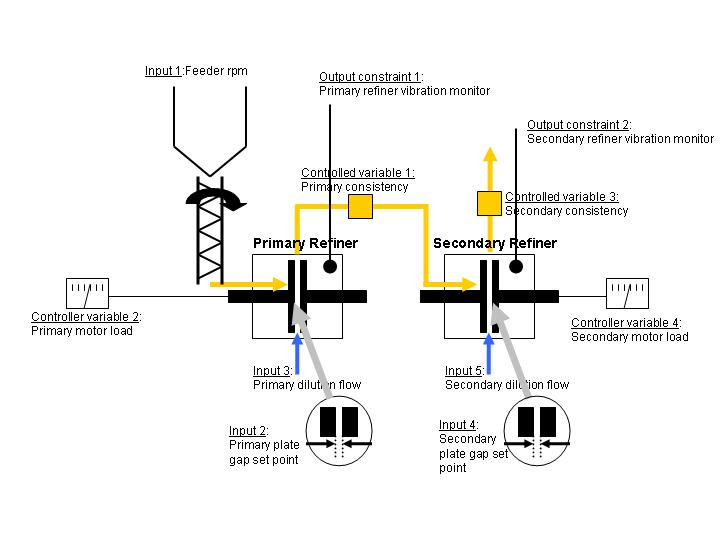
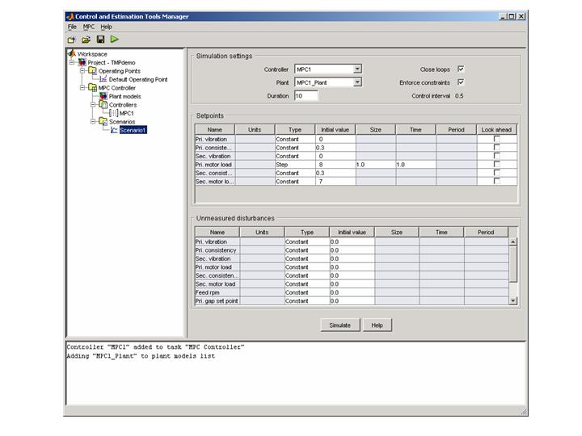
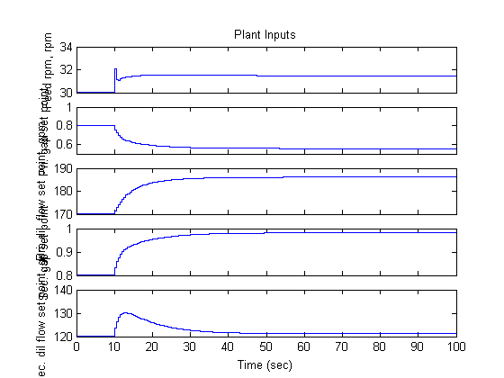
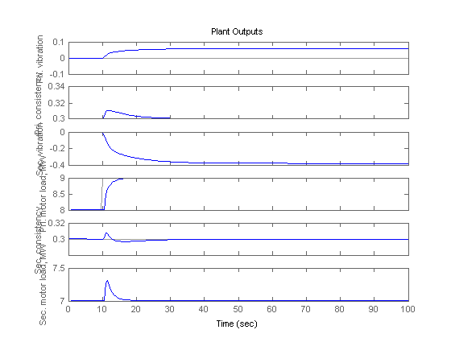
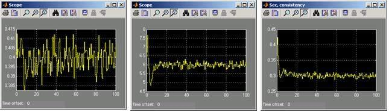

MPC Supervisory Control of a Two Stage Thermo-Mechanical Pulping Process
Contents
This demo illustrates control of a thermo-mechanical pulping (TMP) application using MPC.
Plant Description
The following diagram shows a typical process arrangement for a two stage TMP operation. Two pressured refiners operate in sequence to produce a mechanical pulp suitable for making newsprint.
A primary objective of controlling the TMP plant is to regulate the energy applied to the pulp by the electric motors which drive each refiner to derive pulp with good physical properties without incurring excess energy costs.
A secondary control objective is to regulate the ratio of dry mass flow rate to overall mass flow rate (known as consistency) measured at the outlet of each refiner.
In practice these objectives amount to regulating the primary and secondary refiner motor loads and the primary and secondary refiner constancies subject to the following output constraints:
(1) Power on each refiner must be less than maximum rated values rated.
(2) Maintain the vibration level on the two refiners below a critical level defined to prevent refiner plate clash.
(3) Limits on measured consistency to prevent blow line plugging and fiber damage.
Manipulated variables comprise:
- set points to the two gap controllers regulating the distance between the refiner plates
- the dilution flow rates to the two refiners
- the rpm of the screw feeder
Physical limits are also imposed on each of these inputs.

Modeling of the TMP Plant in Simulink®
if ~mpcchecktoolboxinstalled('simulink') disp('Simulink(R) is required to run this demo.') return end
The following Simulink® model represents a TMP plant and an MPC Controller designed for the control objectives described above. The model can be opened with:
open_system('TMPdemo')

The MPC controller is represented by an MPC object in the workspace. It can be viewed at the command line as follows:
load MPCtmpdemo;
MPC1
MPC object (created on 30-Mar-2004 17:20:31):
---------------------------------------------
Sampling time: 0.5Prediction Horizon: 20Control Horizon: 5
Model:
Plant: [6x5 ss]
Noise: [6x6 ss]
Nominal: [1x1 struct]
Disturbance: []
Output disturbance model: user specified (type "getoutdist(MPC1)" for details)
Details on Plant model:
--------------
5 manipulated variables -->| 7 states |
| |--> 6 measured outputs
0 measured disturbances -->| 5 inputs |
| |--> 0 unmeasured outputs
0 unmeasured disturbances -->| 6 outputs |
--------------
Weights:
ManipulatedVariables: [0 0 0 0 0]
ManipulatedVariablesRate: [0.1000 10 0.1000 10 0.1000]
OutputVariables: [0 10 0 1 10 1]
ECR: 1000000
Constraints:
0 <= Feed rpm (rpm) <= 35, -10 <= Feed rpm/rate (rpm) <= Inf, -Inf <= Pri. vibration <= 1
0 <= Pri. gap set point <= 1, -10 <= Pri. gap set point/rate <= Inf, -Inf <= Pri. consistency <= 0.45
70 <= Pri. dil. flow set point (gpm) <= 250, -10 <= Pri. dil. flow set point/rate (gpm) <= Inf, -Inf <= Sec. vibration <= 1
............... ............... ...............
70 <= Sec. dil flow set point (gpm) <= 250, -10 <= Sec. dil flow set point/rate (gpm) <= Inf, -Inf <= Sec. motor load (MW) <= 9
The controller was built by obtaining a linear plant model from the non-linear TMP Simulink® model using the MPC GUI (accessible from the "Design..." button on the MPC Controller mask) and then tuning the MPC controller from within the MPC GUI.
Tuning the Controller Using the MPC GUI
The controller design parameters can be viewed by opening the MPC GUI from the MPC mask then hitting the "Design..." button. The following window will open:

Controller weights can be viewed by selecting the controller node representing MPC1 and then selecting the "Weights" tab:

The effect of design changes can be observed in the GUI by clicking on the "Scenarios" node to create a new Simulation scenario. The following shows the setup for Simulating a setpoint change on the primary refiner motor load from 8 to 9 MW without model mismatch. The results are displayed in separate figure windows:



Simulating the Design in Simulink®
The controller can be tested on the non-linear plant by running the simulation in Simulink®. Any design changes made in the MPC GUI will automatically be tracked by the MPC mask, so there is no need to export the design back to the workspace. The output of the 3 scopes show the response to an initial set point of:
- Primary consistency 0.4
- Primary motor load 8.5 MW
- secondary consistency 0.3
- secondary motor load of 6 MW

bdclose('tmpdemo')